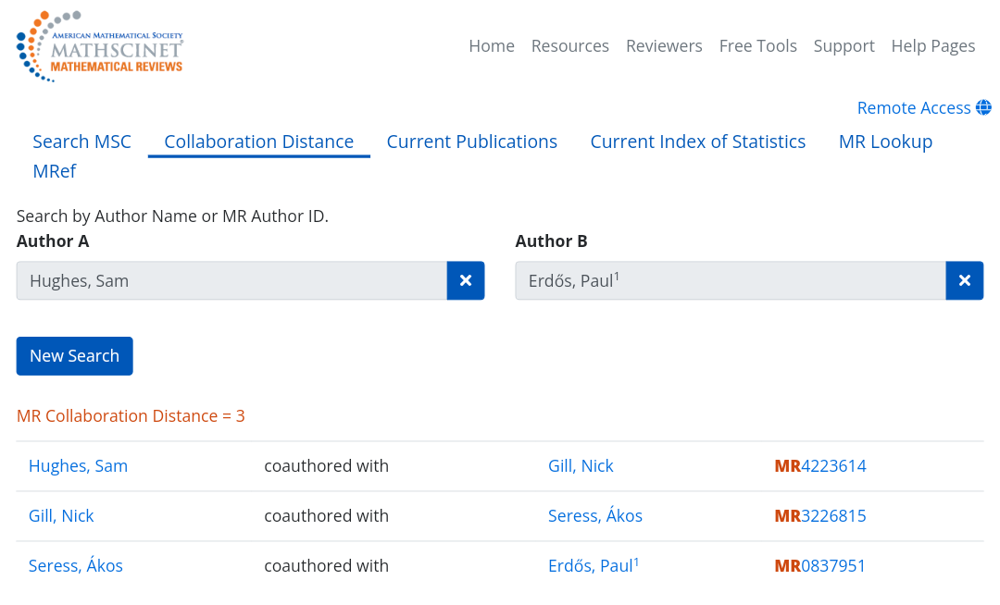
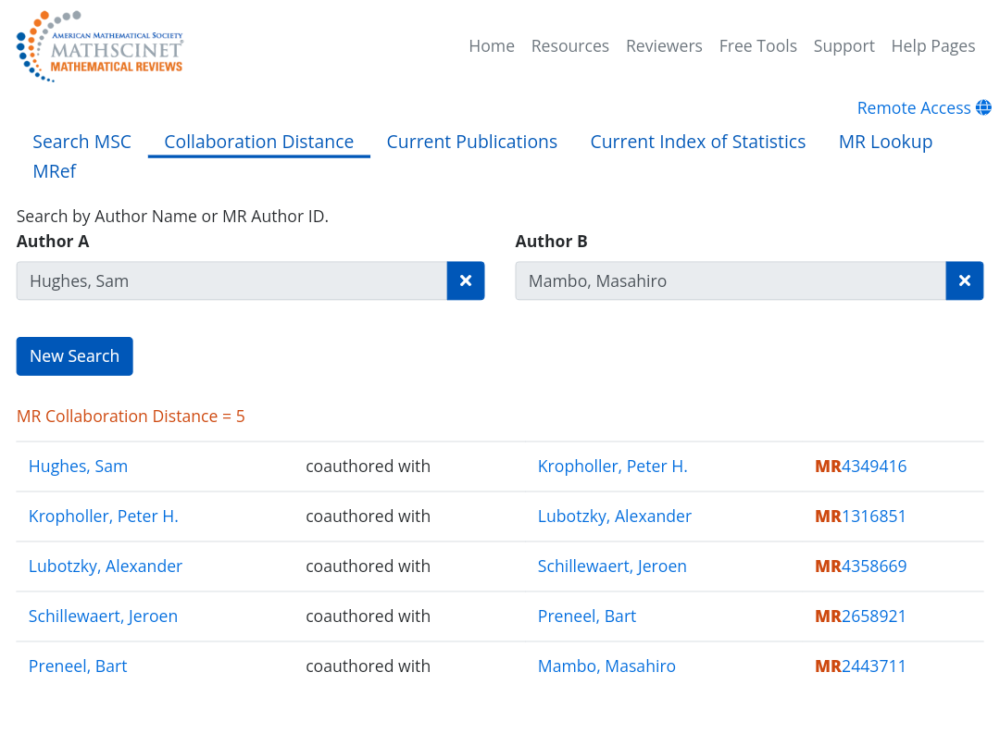
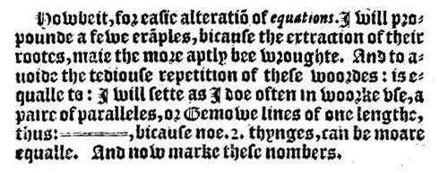

Sam Hughes
Miscellaneous
My Erdos number is 3:

My Mambo number is 5:

Mathemateg Cymru
Roedd dyfeisiwr yr arwydd hafal o Dinbych-y-pysgod.

And to auoide the tediouſe repetition of theſe woordes : is equalle to : I will ſette as I doe often in woorke vſe, a paire of paralleles, or Gemowe lines of one lengthe, thus: =, bicauſe noe .2. thynges, can be moare equalle. — Robert Recorde (1557). The Whetstone of Witte.